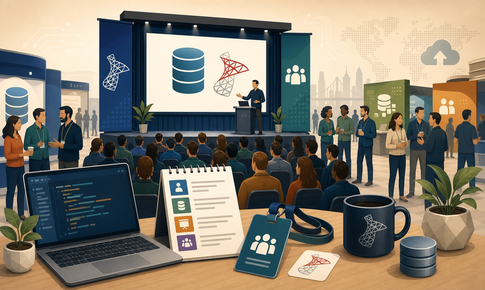
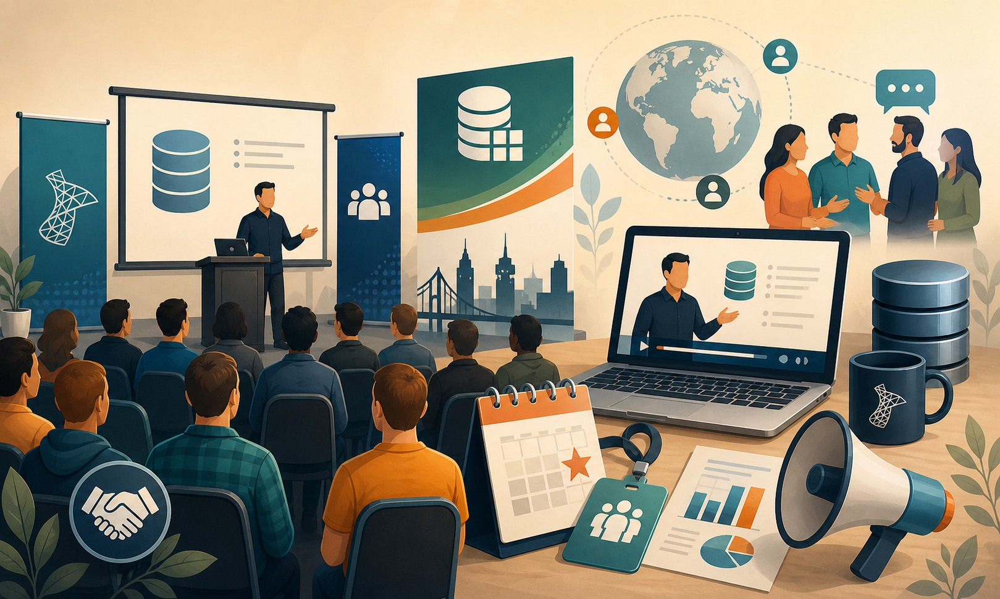

Data Never Rests. Neither do you. Time to learn.
SQL Bits 2019
No período compreendido entre os dias 27/02/2019 e 02/03/2019 estive em Manchester para minha segunda participação consecutiva no maior evento técnico relacionado à platraforma de dados Microsoft e SQL Server da Europa.
O SQL Bits edição 2019 aconteceu em Manchester, Reino Unido e a exemplo do ano anterior, muita gente esteve envolvida e participando.
Abaixo relato um pouco da minha participação nesse ano.
Quarta-Feira 27 de Fevereiro (Training Day - 09:00 - 17:00) - DIA PAGO

Os dois primeiros dias do evento foram destinados a workshops com duração de 1 dia inteiro.
Dentre as várias opções disponíveis, para o primeiro dia, eu optei pelo workshop: Modernize your database with SQL Server 2019 ministrado por Bob Ward.
Confesso que eu esperava que fosse ser um treinamento bem comercial, falando das novas features do SQL Server 2019 de uma maneira bem superficial e abrangente. Felizmente eu estava errado, o dia foi muito proveitoso, me supreendeu positivamente, e saí do workshop com vontade de estudar e aprender mais sobre o mundo de coisas novas e bacanas que estão vindo por aí:
- SQL Server com Docker e Kubernetes
- SQL Server on Linux
- Novas features de segurança
- Big Data Clusters (fantástico, mas não é pra mim ainda)
- dentre várias outras
Um ponto muito positivo e que gostei foi ver que o SQL Server está se tornando cada vez mais uma grande e completa plataforma de dados, englobando o mundo Machine Learning, Big Data, Inteligência Artificial, etc, mas a engine relacional não está sendo deixada de lado, e vem sendo amplamente melhorada da mesma forma.
Quinta-Feira 28 de fevereiro (Conference Sessions - 09:00 - 17:00) - DIA PAGO

Para o segundo dia de evento, e consequentemente de workshop, escolhi,
Modern SQL Server Availability Architectures com Allan Hirt.
Quem me conhece e / ou me acompanha, sabe bem que Alta Disponibilidade e Recuperação de Desastres são minhas áreas preferidas no mundo SQL Server e afins. Eu estava ainda acompanhado por uma grande referência nessa área para a comunidade brasileira, ninguém menos que Nilton Pinheiro (Blog | Twitter)
Foi um bom workshop, mas ficamos com o sentimento de que poderia ter sido ainda melhor, talvez se tivesse sido explorado um pouco mais das novidades e novas possibilidades com a utilização do Availability Groups nas versões mais recentes do SQL Server.
De qualquer maneira, valeu muito a pena também o segundo dia de workshop.
Sexta-Feira 01 de Março (Conference Sessions - 09:00 - 17:40) - DIA PAGO




A Sexta-Feira foi um dia de palestras (ainda pagas) diversas com duração de 50 minutos cada, abaixo um breve comentário das sessões que eu "atendi".
- Azure Cosmos DB Use Cases and Customer Stories - Level 200 (Blesson John)
- Learn to Read Execution Plans - Level 200 (Grant Fritchey)
- Simplifying Disaster Recovery using dbatools - Level 200 (Chrissy LeMaire)
- Azure Managed Instances - Your Bridge to the Cloud - Level 300 (Joey D'Antoni)
- From adaptivie to intelligent: Query processing in SQL 2019 - Level 200 (Hugo Kornelis)
- Top 5 Tips to keep Always On AGs Humming and Users Happy - Level 200 (Matt Gordon)
Sábado 02 de Março (Conference Sessions - 09:00 - 17:40) - DIA GRATUITO


Sábado foi o Community Day, dia especialmente dedicado e aberto à comunidade em geral, não sendo necessário pagamento para participação nesse dia, que também contou com diversas palestras interessantes:
- Slack for the DBA - Level 200 (Stuart Moore)
- SQL Server Encryption for the Layman - Level 200 (Niall Langley)
- Modernize on-prem SQL Servers to Azure using Azure - Level 200 (Microsoft)
- Find and Fix those Troublesome Queries - Level 200 (Allen White)
- SQL Server and Kubernetes - Level 300 (Andrew Pruski)
- Modernizing your SQL Server the right way - Level 300 (Pedro Lopes)
- Taming the Beast - How a DBA can keep kerberos under control - Level 400 (David Pastlethwaite)
Takeaways
Nos últimos meses eu estava bastante desanimado, de certa forma confortável com minha atual situação profissional e sem qualquer ânimo ou fôlego para abrir o laptop, criar máquinas virtuais (ou containers), e estudar algo novo.
Ter vindo ao SQL Bits 2019, me fez ver que eu preciso arregaçar as mangas, e fazer três coisas muito importantes (que costumeiramente, sempre fiz).
- Estudar
- Estudar
- Compartilhar (o que de certa forma, leva às duas anteriores)
Dito isso, é um compromisso pessoal meu, registrado aqui, que retomarei na ordem acima os hábitos para que possa aprender esse mundo de coisas novas e interessantes que vem vindo por aí junto com o nosso fantástico (sic) SQL Server.
Também quero deixar registrado aqui todo meu agradecimento à empresa, que pelo segundo ano consecutivo, fez com que minha presença nesse evento grandioso se tornasse possível.
Mais algumas fotos do evento


